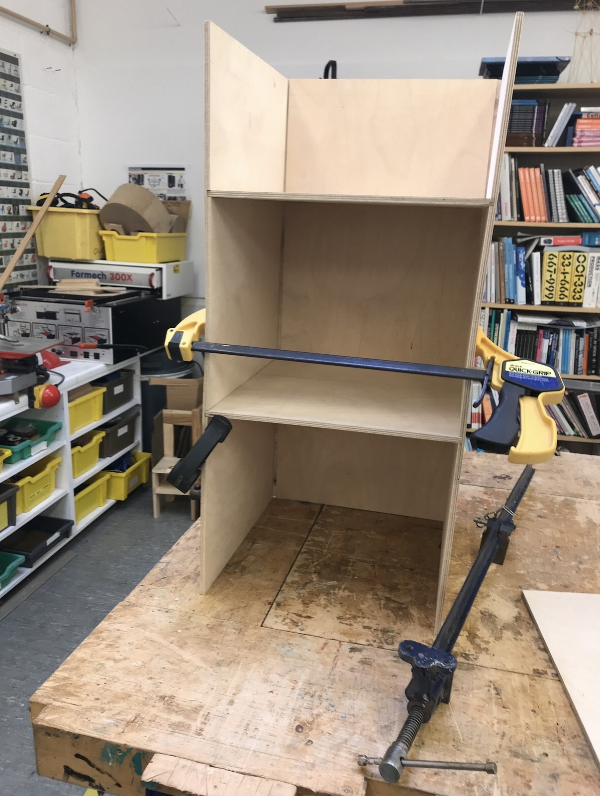
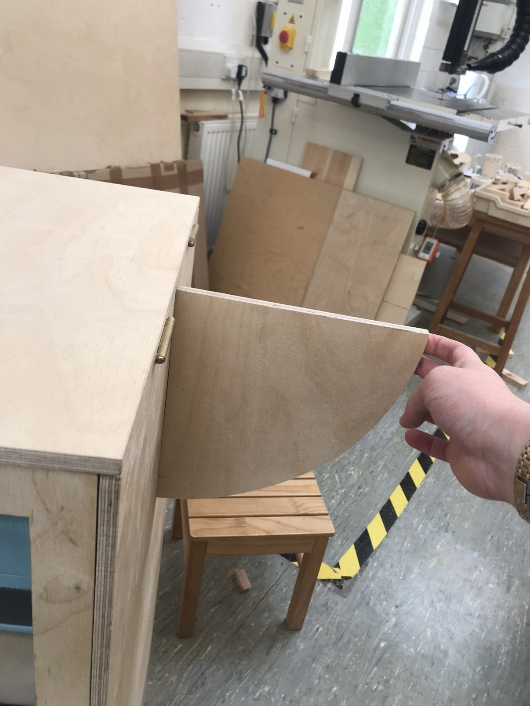
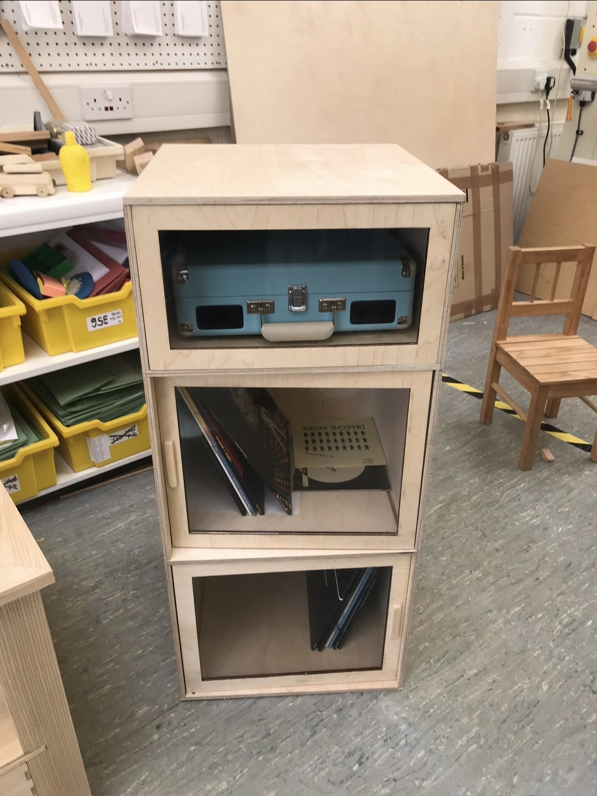
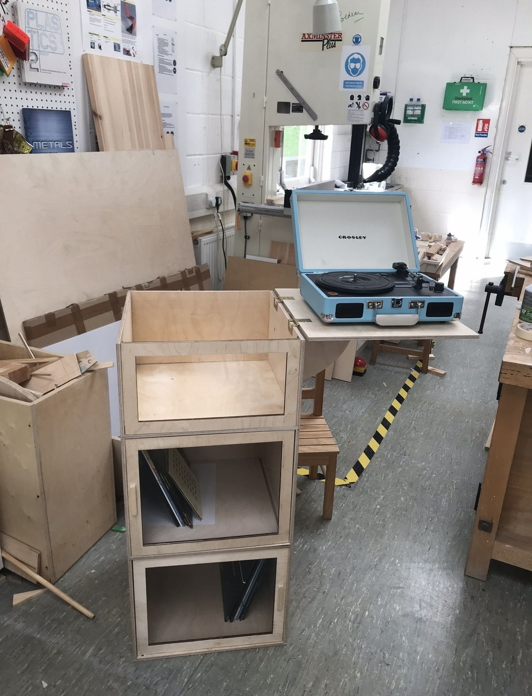

GCSE Design & Technology · 2018
For my GCSE Design & Technology project I designed and built a freestanding cabinet in birch plywood to house a record player with two shelves to hold a vinyl collection.
My interest in mid century furniture at the time, and its focus on natural materials was my starting point. I wanted to leave the wood ply exposed and the cabinet to follow simple lines and shapes. It is built out of a rectangular box, with shelves slotted in. The shelves clear doors which retract to reveal the vinyls. With the lid fully open you can play the turntable from inside the cabinet or place it on the lid which is reinforced. The two shelves below store records upright for easy viewing and fully contained within the unit for sun protection.
The build used a full range of processes and took into account the fragility of the equipment it was being made for. A cabinet of vinyls can be very heavy so the shelves and back fix into the side panels with housing joints and rebates reinforced with wood glue, so the joint carries the load and is supported but does not rely on the adhesive.
The detail I am most proud of is the door mechanism. Hailing from the ovens I saw on The Great British Bake Off, the side hinged door opens out into the room. When parallel with the walls of the cabinet, slides and retracts in flat next to the records, like a pull down and slot in oven door! It moves out of the way of the vinyls completely, for easy access when in use, and can be closed to protect from dust and accidental damage.
It was the first piece I designed independently and built myself of this size and it still lives in my room and gets used.



